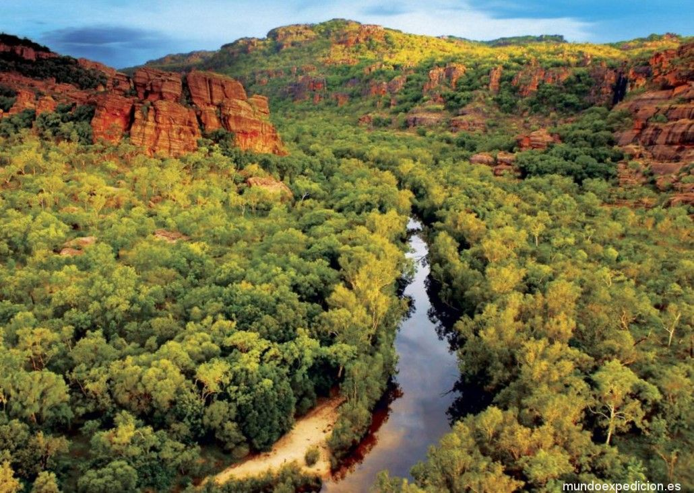
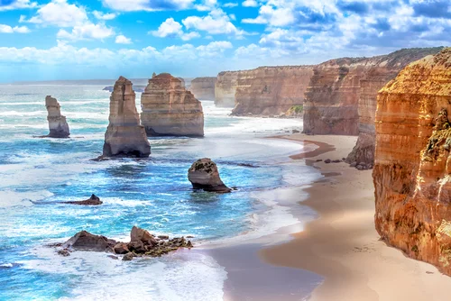
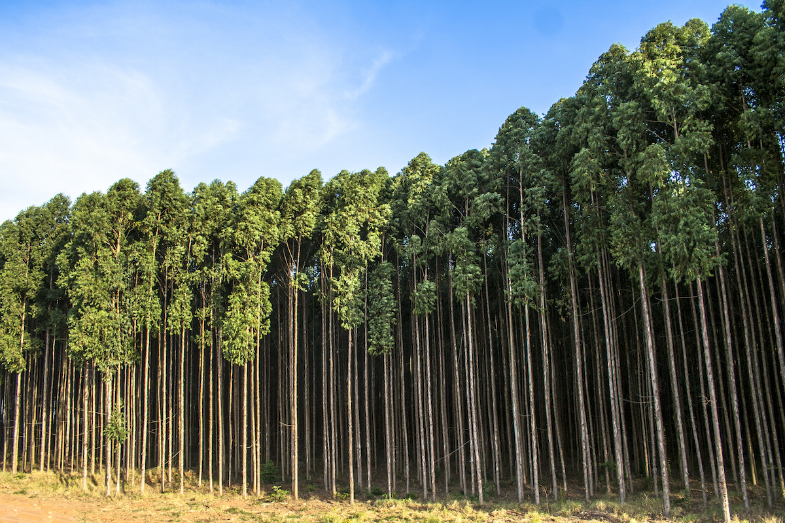
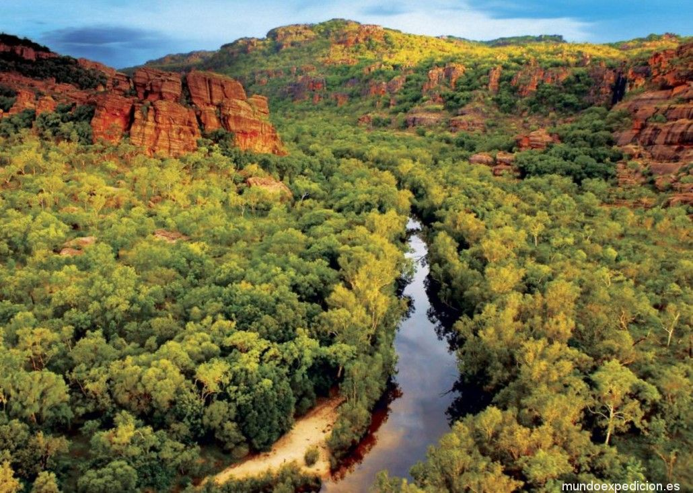
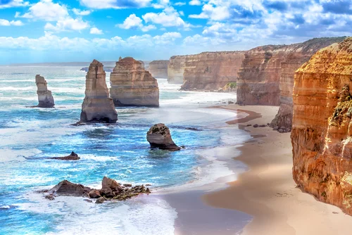
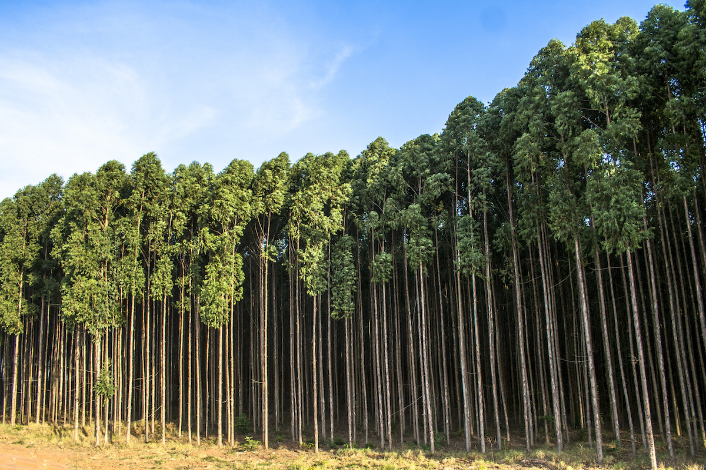
 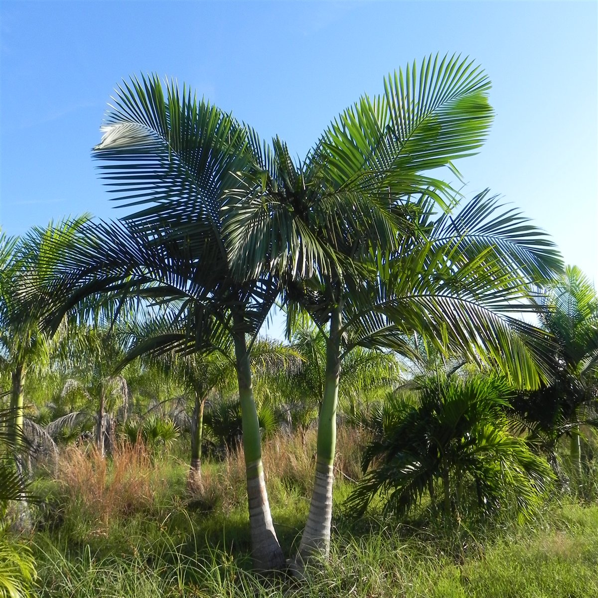
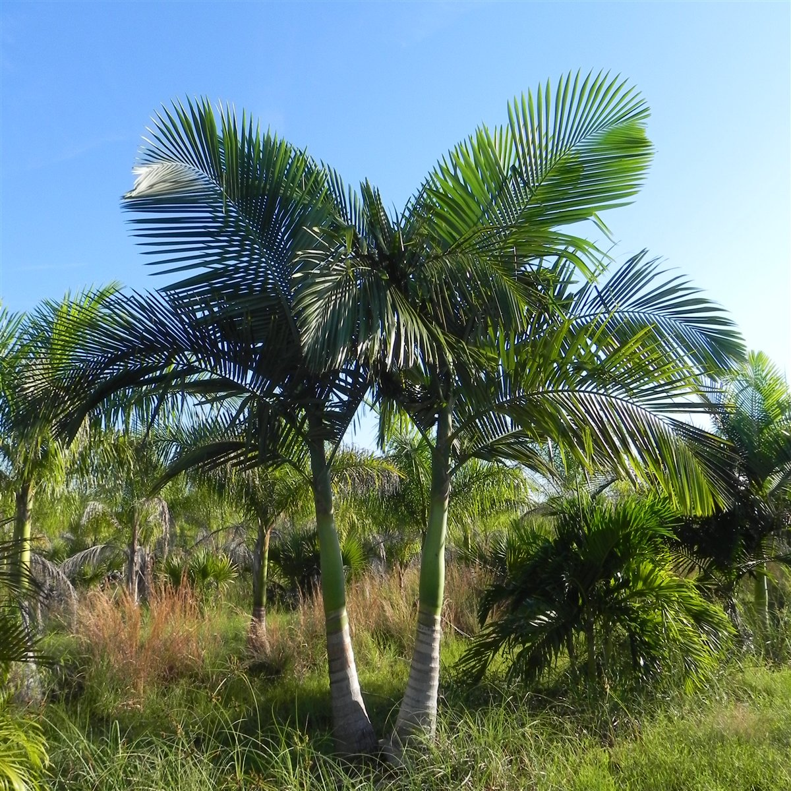


Austràlia és un estat de l'hemisferi sud que conforma un continent; i que inclou, diverses illes petites dels oceans Pacífic i Índic.
La seua capital és Canberra.
 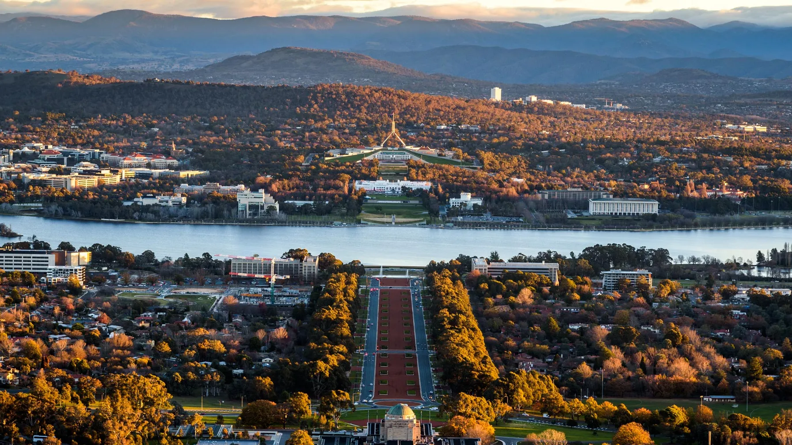
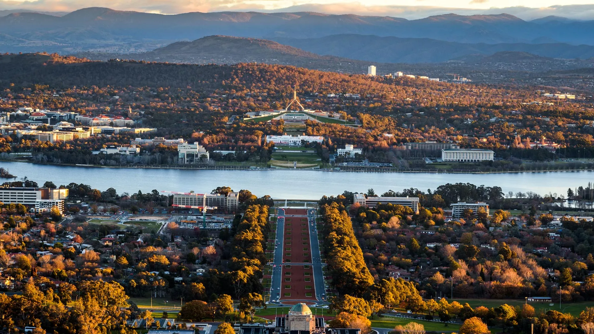
Austràlia posseeix més de 22 mil espècies de flora, una gran part endèmiques, amb predomini de boscos d'acàcies i eucaliptus en les zones costaneres. Algunes de les plantes i arbres característics d'Austràlia són l'eucaliptus, l'arbre de foc, la palmera d'Alexandria, el pi australià i l'acàcia australiana.
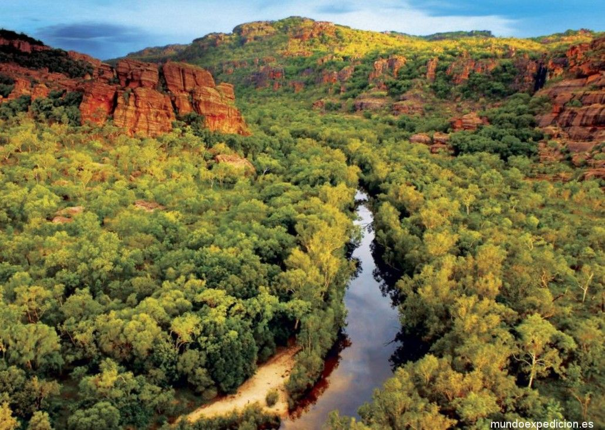
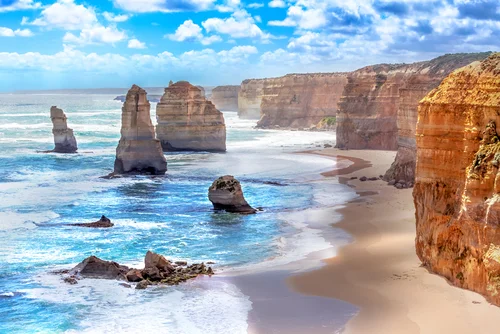
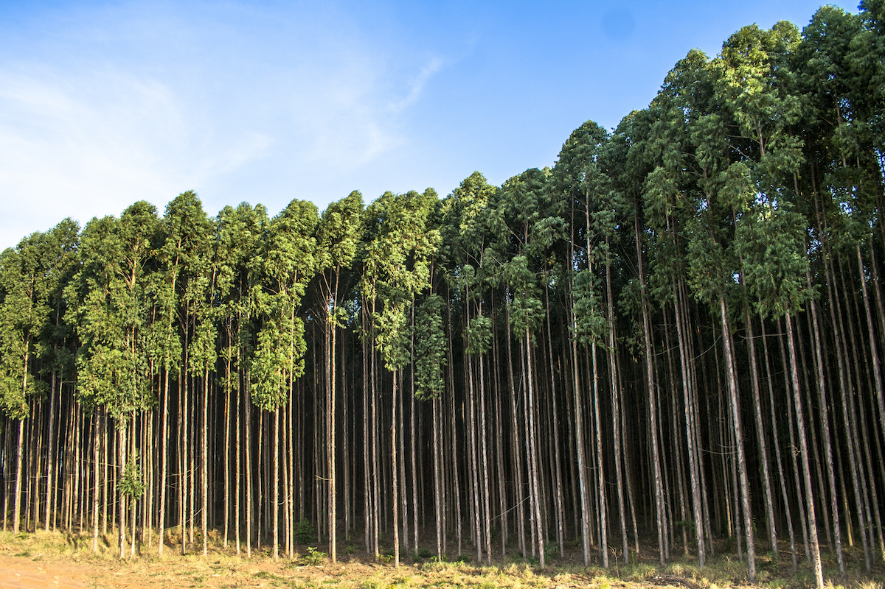
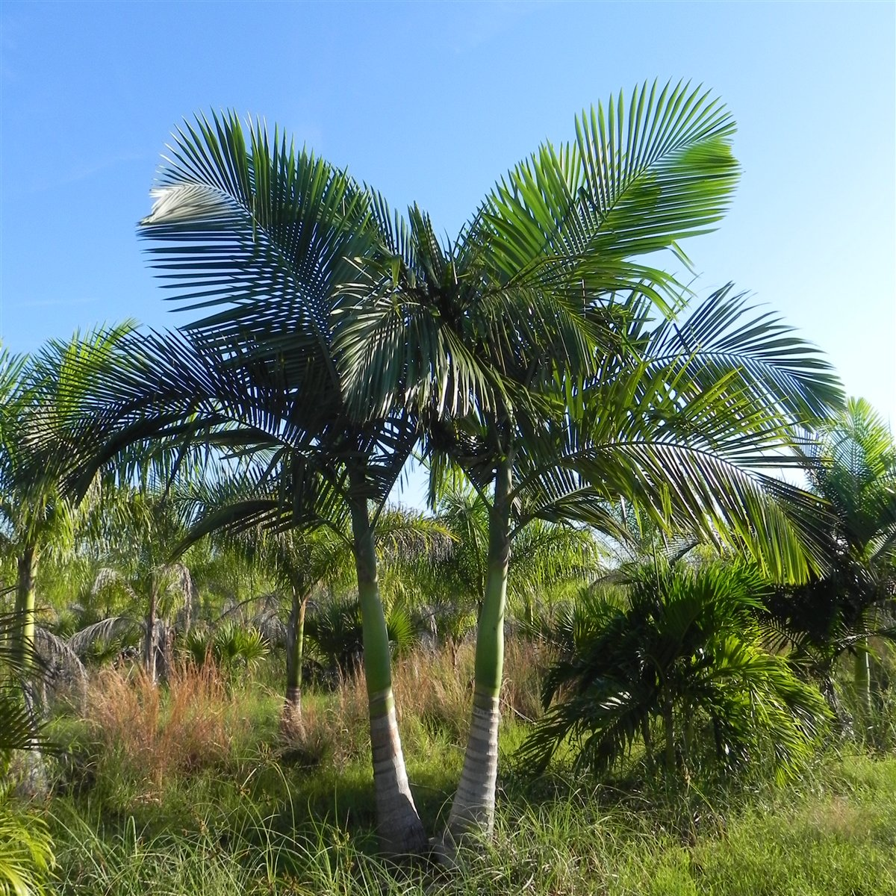